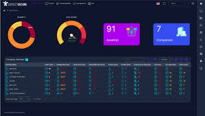

Security Vulnerability Identification Model - Electrix Ltd
Developed an innovative security vulnerability identification model using advanced Natural Language Processing (NLP) techniques to analyze system logs and identify potential security threats. This model leverages supervised machine learning algorithms to classify vulnerabilities based on severity and likelihood, enabling proactive security measures and enhanced threat management.
Key Achievements:
- Data Collection: Compiled a comprehensive dataset of security logs and vulnerability reports from various sources, ensuring a well-rounded training set for model development.
- Text Processing: Utilized NLTK and spaCy for text preprocessing, including tokenization, stemming, and removal of stop words to refine data for analysis.
- Model Training: Implemented supervised learning algorithms using scikit-learn and TensorFlow, achieving high accuracy in vulnerability classification and risk assessment.
- Evaluation Metrics: Attained an accuracy of 93% and an F1 score of 0.90, demonstrating strong model performance in real-world applications.
- Implementation: Integrated the model into existing security frameworks, allowing for real-time analysis and automated alerts for identified vulnerabilities.
This model significantly enhanced Electrix Ltd's security posture, reducing response times to threats and increasing overall system integrity through effective vulnerability management.
Back to Home
